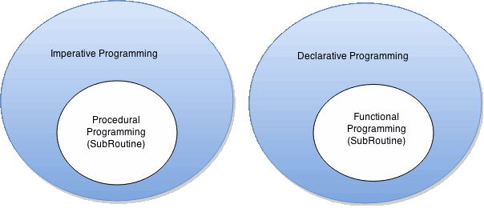

/
On this page
Programming paradigms
Imperative vs Declarative

Programming paradigms describe coding on different levels of abstraction:
- imperative: concerned with how to do it, not what to do. C, Java, Python, and most other programming languages are imperative. As a rule, if it has explicit loops (for, while, repeat) that change variables with explicit assignment operations at each loop, then it’s imperative.
- declarative: concerned with what to do, not how to do it. SQL and XSLT are two well-known examples of declarative programming. Markup languages such as HTML and CSS are declarative too, although they are usually not powerful enough to describe arbitrary algorithms. Declarative programming is on a higher level of abstraction than imperative programming.
Examples
Here is an example computation (summing the income by gender, from a suitable data source).
Imperative programming
var income_m = 0, income_f = 0;
for (var i = 0; i < income_list.length; i++) {
if (income_list[i].gender == 'M')
income_m += income_list[i].income;
else
income_f += income_list[i].income;
}Notice:
- explicit initialization of variables that will contain the running totals
- explicit loop over the data, modifying the control variable (i) and the running totals at each iteration
- conditionals (ifs) are only used to choose the code path at each iteration
Declarative programming
select gender, sum(income)
from income_list
group by gender;Notice:
- memory cells to contain running totals are implied by the output you declare you want
- any loop the CPU will need to perform (eg. over the income_list table) is implied by the output you declare you want and by the structure of the source data
- conditionals (eg. case in SQL) are used in a functional way to specify the output value you want based on the input values, not to choose a code path (you decide what to do, not how to do it)
Functional vs procedural
Functional and procedural programming paradigms are extensions of the concept of declarative and imperative programming paradigms.
Subroutines
Both functional and procedural programming have some kind of subroutines: one uses functions, the other procedures.
Subroutines that are used for re-executing a predefined block of code. The difference between them is that functions return a value, and procedures do not. More specifically, functions are designed to have minimal side effects, and always produce the same output when given the same input. Furthermore, functions are usually concerned with higher level ideas and concepts. Procedures on the other hand do not have any return value, their primary purpose is to accomplish a given task and cause a desired side effect. (this basically goes back to the examples already shown earlier).
The desired computation is specified by composing functions (in functional programming). Composition means chaining two or more functions together by specifying how the output of one is fed as the input to the next (typically by writing one inside the other) Finally the whole composition, which is still itself a big function, is applied to the available inputs to get the desired output.
Objects
Data structures in procedural languages are generally mutable, which means they can be changed. Most functional languages don’t allow you to change an object or variable after it has been created.